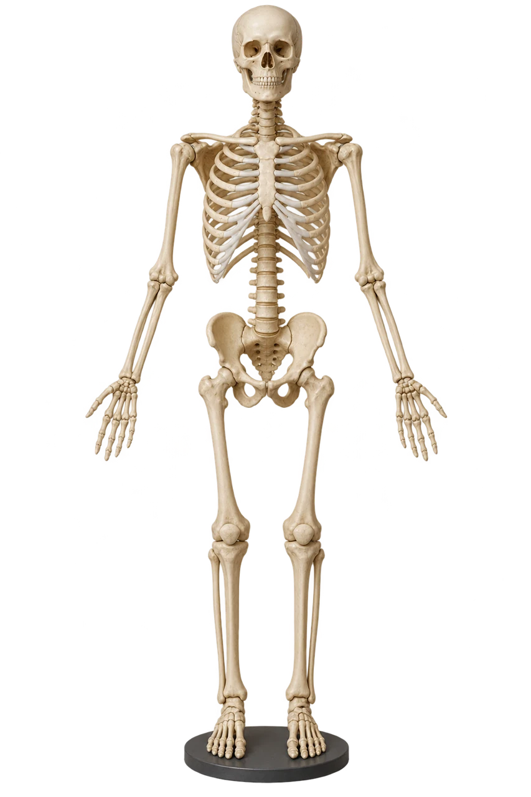
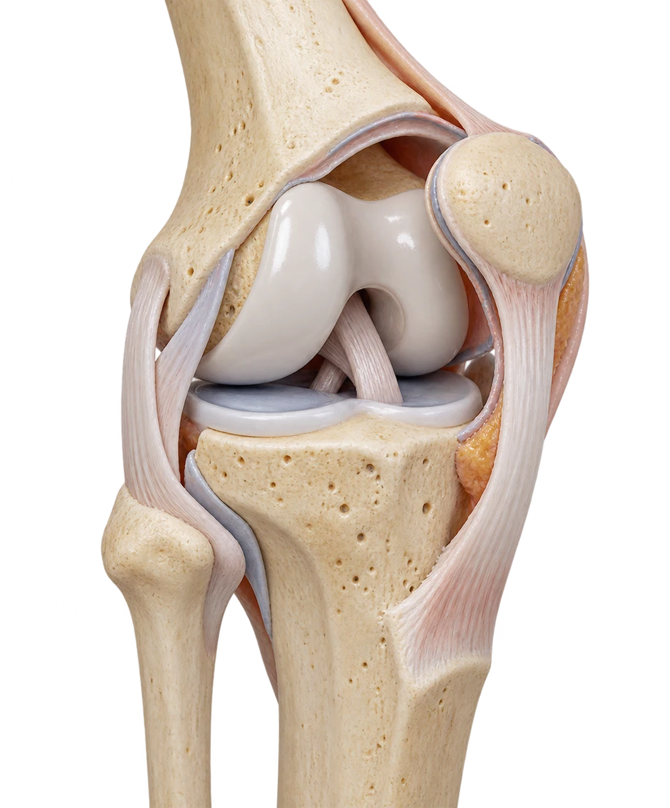

MEDLEX / CLINICAL TEAL
Musculoskeletal system
Interactive lesson36 slides · explore, recall, explain
 MedLexTHE LANGUAGE OF MEDICINE
MedLexTHE LANGUAGE OF MEDICINE Healthcare Crown Academy
Healthcare Crown AcademyMEDLEX / BATCH 02
Musculoskeletal
system
Explore the vocabulary. Make the distinctions. Explain the meaning with confidence.
36 slidesExplore · recall · applyClinical Teal

Foundations
One injury. Four unfamiliar words.
Hook / Read this fictional referral before learning the vocabulary.
Limited supination.
Plan: open reduction and internal fixation.”
What can you already decode?
Which bone? Which end? Which movement? Which procedure?
Preview the plain-language meaning
A break near the wrist end of the left radius. Outward rotation of the forearm is limited. Surgery will expose and realign the fracture, then stabilize it with internal hardware.
Foundations
A route from recognition to use
Learning outcomes / By the end, you should be able to…
Locate
Identify bones, joints, muscle, and supporting tissues.
Decode
Use roots and suffixes to interpret unfamiliar terms.
Distinguish
Separate commonly confused symptoms, injuries, and procedures.
Apply
Translate a short clinical note into clear everyday language.
Foundations
A system built for support and movement
Anatomy / The tissue tells you which word family to expect.
Bone · oste/o
Rigid support, organ protection, mineral storage, and marrow spaces.
Joint · arthr/o
An articulation where skeletal elements meet.
Muscle · my/o
Skeletal muscle generates tension for movement and posture.
Connective tissues
Cartilage, tendon, ligament, fascia, and bursae support function.
Foundations
Two divisions of the skeleton
Anatomy / First locate the structure. Then name it.
OpenStax, Anatomy & Physiology, fig. 7.1; via NorQuest §6.12. CC BY 4.0 · Click image to enlarge
Axial skeleton
Skull, vertebral column, and thoracic cage. The central framework.
Appendicular skeleton
Upper and lower limbs plus the shoulder and pelvic girdles.
Foundations
Landmarks that anchor clinical language
Anatomy / Use the patient’s anatomical position.
| Region | Bones to recognize | Useful distinction |
|---|---|---|
| Upper limb | Humerus, radius, ulna | Radius: thumb side. Ulna: little-finger side. |
| Lower limb | Femur, patella, tibia, fibula | Tibia: medial, main weight-bearing leg bone. Fibula: lateral. |
| Spine | Cervical, thoracic, lumbar vertebrae; sacrum; coccyx | Cervical = neck. Lumbar = lower back. |
| Girdles | Clavicle and scapula; hip bones | Pelvis and hip joint describe different anatomical structures. |
Foundations
Inside a long bone
Anatomy / Names describe location and structure.

Original conceptual diagram · not to scale
Diaphysis
The shaft of a long bone.
Epiphysis / metaphysis
An epiphysis is an end. The metaphysis is the transition region beside it.
Periosteum / endosteum
Periosteum covers the outer surface except articular surfaces. Endosteum lines internal bone surfaces.
Source desk
OpenStax · Bone structure, §6.3 ↗Foundations
A joint is more than a space
Anatomy / Click each layer to connect structure with function.
3D-style synovial joint schematic · not to scale
Articular cartilage
Smooth tissue covering the articulating bone ends. It reduces friction and distributes load.
Synovium and fluid
The synovial membrane lines the inner capsule, excluding cartilage, and produces fluid that lubricates the joint.
Capsule and ligaments
The capsule encloses the joint. Ligaments reinforce stability, typically connecting bone to bone.
Bursa
A small fluid-containing sac that reduces friction between moving tissues. It is distinct from the joint cavity.
Foundations
Muscle and its connective tissues
Anatomy / Similar neighbors, different jobs.
OpenStax, Anatomy & Physiology, fig. 11.5; cropped image via NorQuest §6.12. CC BY 4.0 · Click image to enlarge
Foundations
Three structural classes of joints
Anatomy / Structure and movement are different classification systems.
Fibrous
Bones join through fibrous connective tissue. Example: a skull suture.
Cartilaginous
Cartilage joins bones. Example: the pubic symphysis.
Synovial
A fluid-filled joint cavity permits free movement. Example: the knee.
Source desk
OpenStax · Joint classification, §9.1 ↗Foundations
Movement makes the words visible
Movement / Change the elbow angle, then compare the terms.
Conceptual angle illustration, not a clinical ROM measurement.
Source desk
OpenStax · Body movements, §9.5 ↗Foundations
Movement language beyond the elbow
Movement / Click a term before reading its definition.
Word building
Medical words have a workable grammar
Word building / Read the ending, then identify the structure.
Root
Carries the core meaning. oste- refers to bone.
Combining form
Root plus combining vowel. oste/o means bone.
Suffix
Adds a condition or procedure. -ectomy means surgical removal.
Prefix
Modifies meaning or location. peri- means around.
Word building
A small set of roots opens many words
Word building / Color links the word part to its tissue.
Word building
Suffixes tell you what happened
Word building / Compare pain, inflammation, disease, and tissue change.
Word building
Combining vowels follow useful patterns
Word building / Most often “o”, with exceptions.
| Pattern | Example | What changes? |
|---|---|---|
| Before a consonant-starting suffix | arthr/o + -scopy → arthroscopy | Keep the combining vowel. |
| Before a vowel-starting suffix | arthr + -itis → arthritis | Usually drop the combining vowel. |
| Between two roots | oste/o + arthr + -itis → osteoarthritis | Keep the vowel between roots. |
| Prefix before a root | peri- + oste- + -um → periosteum | A prefix usually attaches directly. |
Practice
The word-building laboratory
Practice / Predict a meaning, then reveal the complete term.
ACCEPTED WORDS
These are established examples. Osteopathy also names a professional field in some countries; use context.
Clinical terms
Pain and inflammation are different claims
Clinical terms / A symptom alone does not establish the cause.
Arthralgia
Pain in a joint.
The word does not by itself confirm inflammation.
Arthritis
Joint inflammation.
The specific disease name adds mechanism and context.
Clinical terms
Sprain and strain: identify the tissue
Clinical terms / Similar presentation, different structures.
Sprain
Stretching or tearing of a ligament .
Example: an ankle ligament injury.Strain
Injury to a muscle or tendon .
Example: a hamstring strain.Source desk
NIAMS · Sports injuries ↗Clinical terms
A fracture description answers several questions
Clinical terms / The descriptors describe different dimensions.
Left distal radius
Displaced or nondisplaced
Open or closed
Transverse, oblique, spiral, comminuted
Open fracture
The fracture communicates with an external wound. Bone need not protrude.
Closed fracture
No communication between the fracture and the outside through a wound.
Comminuted fracture
The bone breaks into multiple fragments.
Clinical terms
Bone disorders: similar beginnings, different meanings
Clinical terms / “Osteo-” locates the tissue; the rest changes the story.
Osteoporosis
Reduced bone strength increases fracture risk. It may remain silent until a fracture occurs.
Osteomalacia
Defective mineralization causes abnormal bone softening in adults. It differs from osteoporosis.
Osteomyelitis
Infection of bone, often involving the marrow.
Osteoarthritis
A disease affecting the whole joint, including cartilage and bone.
Clinical terms
Two arthritis names, two disease patterns
Clinical terms / Learn mechanisms without using patterns as a diagnosis.
Osteoarthritis
Progressive changes in the whole joint, including cartilage, bone, and other tissues.
Activity-related pain and brief stiffness after rest are common.
Rheumatoid arthritis
An autoimmune inflammatory disease that commonly affects synovial joints.
It may involve other body systems. Persistent swelling and stiffness can occur.
Extension
Spine words that look almost identical
Extension / Read each middle segment carefully.
Investigations
Tests name a method, not a conclusion
Investigations / Match the question to the vocabulary.
| Term | What it describes | Interpretation point |
|---|---|---|
| Radiography / X-ray | Images produced using X-rays | Often used to assess bone and alignment. |
| MRI | Magnetic resonance imaging | Displays soft tissue and bone marrow without ionizing radiation. |
| DXA / DEXA | Dual-energy X-ray absorptiometry | Measures bone mineral density. Different from a nuclear bone scan. |
| EMG | Electromyography | Assesses muscle electrical activity, often with nerve conduction studies. |
| CK | Creatine kinase blood test | May rise with muscle injury. An elevated result alone does not identify the cause. |
Procedures
Procedure endings change the action
Procedures / Compare the same root with different suffixes.
Procedures
Reduction and fixation do different work
Procedures / Realignment and stabilization are separate actions.
Closed reduction
Realignment without surgically exposing the fracture.
Open reduction
Surgical exposure to realign the fracture.
Internal fixation
Implanted devices such as plates, screws, or rods stabilize bone.
External fixation
Pins or wires in bone connect to a frame outside the body.
Documentation
Clinical shorthand needs context
Documentation / Spell it out before you shorten it.
| Abbreviation | Expansion | Documentation reminder |
|---|---|---|
| MSK | Musculoskeletal | Use the full term at first mention. |
| ROM | Range of motion | State active or passive, joint, and side. |
| OA / RA | Osteoarthritis / rheumatoid arthritis | Identify the disease, rather than writing only “arthritis.” |
| ORIF | Open reduction and internal fixation | Describes a procedure, not the fracture’s skin status. |
| PT / OT | Physical therapy / occupational therapy | PT can also mean prothrombin time in a laboratory context. |
| NWB / WBAT | Non-weight-bearing / weight-bearing as tolerated | Use only within an explicit clinician-directed plan. |
Source desk
Nicolet College · Skeletal system ↗Application
The original note is now readable
Application / Return to the case, one phrase at a time.
Left distal radius fracture
A break near the wrist end of the radius on the patient’s left side.
Limited supination
Reduced ability to rotate the forearm into the palm-forward position in anatomical position.
Open reduction and internal fixation
Surgical exposure and realignment, followed by stabilization with hardware inside the body.
Application
A second case: bone or joint?
Application / Translate the vocabulary without inventing a diagnosis.
Assessment
Retrieval practice: choose, then explain
Knowledge check / Try each question before reading feedback.
Assessment
Transfer practice: a new phrase
Knowledge check / Apply the pattern to words in context.
Review
A compact flashcard studio
Review / Say the meaning aloud before flipping.
Review
Your exit ticket
Review / Close the lesson with an explanation in your own words.
Decode
Explain oste/o, arthr/o, and my/o without looking.
Distinguish
Give one difference between sprain and strain, then arthralgia and arthritis.
Translate
Describe ORIF in everyday language.
References
Source desk / 1
References / Exact source links and image attribution.
Live pages checked 19 October 2026. Access dates differ from revision dates. Foundational definitions remain useful even when an official page was published earlier.
Core roots, prefixes, and suffixes. Live page checked 19 Oct 2026.
Word-building method and combining forms. Checked 19 Oct 2026.
Long-bone anatomy, coverings, and cells. Anatomy & Physiology 2e (2022).
Axial and appendicular organization. Anatomy & Physiology 2e.
OpenStax · Joint classification, §9.1
Structural and functional classification.
Joint structures and six synovial joint types.
Movement terminology and anatomical position.
Muscle organization and connective tissues.
Sprain, strain, tendinitis, and bursitis. Checked 19 Oct 2026.
Open/closed and displaced fracture terminology. Checked 19 Oct 2026.
Bone strength and fragility fractures. Page last reviewed December 2022; checked 19 Oct 2026.
Disease affects the whole joint. Checked 19 Oct 2026.
Autoimmune inflammatory disease. Checked 19 Oct 2026.
Source desk
01 NLM · Word parts Core roots, prefixes, and suffixes. Live page checked 19 Oct 2026. ↗ ↗02 NLM · Understanding medical words Word-building method and combining forms. Checked 19 Oct 2026. ↗ ↗03 OpenStax · Bone structure, §6.3 Long-bone anatomy, coverings, and cells. Anatomy & Physiology 2e (2022). ↗ ↗04 OpenStax · Skeletal divisions, §7.1 Axial and appendicular organization. Anatomy & Physiology 2e. ↗ ↗05 OpenStax · Joint classification, §9.1 Structural and functional classification. ↗ ↗06 OpenStax · Synovial joints, §9.4 Joint structures and six synovial joint types. ↗ ↗07 OpenStax · Body movements, §9.5 Movement terminology and anatomical position. ↗ ↗08 OpenStax · Skeletal muscle, §10.2 Muscle organization and connective tissues. ↗ ↗09 NIAMS · Sports injuries Sprain, strain, tendinitis, and bursitis. Checked 19 Oct 2026. ↗ ↗10 AAOS · Fractures Open/closed and displaced fracture terminology. Checked 19 Oct 2026. ↗ ↗11 NIAMS · Osteoporosis Bone strength and fragility fractures. Page last reviewed December 2022; checked 19 Oct 2026. ↗ ↗12 NIAMS · Osteoarthritis Disease affects the whole joint. Checked 19 Oct 2026. ↗ ↗13 NIAMS · Rheumatoid arthritis Autoimmune inflammatory disease. Checked 19 Oct 2026. ↗ ↗NLM · Word parts ↗NLM · Understanding medical words ↗OpenStax · Bone structure, §6.3 ↗OpenStax · Skeletal divisions, §7.1 ↗OpenStax · Joint classification, §9.1 ↗OpenStax · Synovial joints, §9.4 ↗OpenStax · Body movements, §9.5 ↗OpenStax · Skeletal muscle, §10.2 ↗NIAMS · Sports injuries ↗AAOS · Fractures ↗NIAMS · Osteoporosis ↗NIAMS · Osteoarthritis ↗NIAMS · Rheumatoid arthritis ↗AAOS · Arthroscopy ↗NLM · Bone density scan ↗NLM · EMG and nerve conduction studies ↗NLM · Creatine kinase ↗NorQuest College · Medical terminology ↗Nicolet College · Skeletal system ↗NLM · Osteomalacia ↗NLM · Osteomyelitis ↗AAOS · Adult spondylolisthesis ↗AAOS · Spondylolysis research update ↗AAOS · Foot and ankle arthritis ↗AAOS · Low back pain ↗References
Source desk / 2
References / Exact source links and image attribution.
Live pages checked 19 October 2026. Access dates differ from revision dates. Foundational definitions remain useful even when an official page was published earlier.
Arthroscopic visualization and treatment. Checked 19 Oct 2026.
DXA/DEXA and bone mineral density. Checked 19 Oct 2026.
NLM · EMG and nerve conduction studies
Electrical muscle and peripheral nerve assessment. Checked 19 Oct 2026.
CK blood testing and interpretation limits. Checked 19 Oct 2026.
NorQuest College · Medical terminology
Additional system terminology and anatomical images. The Language of Medical Terminology, §6.12.
Additional word-building, procedures, and clinical terminology. Checked 19 Oct 2026.
Defective mineralization and bone softening. Checked 19 Oct 2026.
Bone infection terminology. Checked 19 Oct 2026.
Pars defects, vertebral slip, and degeneration. Checked 19 Oct 2026.
AAOS · Spondylolysis research update
September 2026. Optional faculty reading. Terminology includes pars defects and stress injuries; this lesson does not teach the study’s treatment protocol.
Arthrodesis and arthroplasty terminology. Checked 19 Oct 2026.
Spondylosis and degenerative spinal terminology. Checked 19 Oct 2026.
Source desk
14 AAOS · Arthroscopy Arthroscopic visualization and treatment. Checked 19 Oct 2026. ↗ ↗15 NLM · Bone density scan DXA/DEXA and bone mineral density. Checked 19 Oct 2026. ↗ ↗16 NLM · EMG and nerve conduction studies Electrical muscle and peripheral nerve assessment. Checked 19 Oct 2026. ↗ ↗17 NLM · Creatine kinase CK blood testing and interpretation limits. Checked 19 Oct 2026. ↗ ↗18 NorQuest College · Medical terminology Additional system terminology and anatomical images. The Language of Medical Terminology, §6.12. ↗ ↗19 Nicolet College · Skeletal system Additional word-building, procedures, and clinical terminology. Checked 19 Oct 2026. ↗ ↗20 NLM · Osteomalacia Defective mineralization and bone softening. Checked 19 Oct 2026. ↗ ↗21 NLM · Osteomyelitis Bone infection terminology. Checked 19 Oct 2026. ↗ ↗22 AAOS · Adult spondylolisthesis Pars defects, vertebral slip, and degeneration. Checked 19 Oct 2026. ↗ ↗23 AAOS · Spondylolysis research update September 2026. Optional faculty reading. Terminology includes pars defects and stress injuries; this lesson does not teach the study’s treatment protocol. ↗ ↗24 AAOS · Foot and ankle arthritis Arthrodesis and arthroplasty terminology. Checked 19 Oct 2026. ↗ ↗25 AAOS · Low back pain Spondylosis and degenerative spinal terminology. Checked 19 Oct 2026. ↗ ↗NLM · Word parts ↗NLM · Understanding medical words ↗OpenStax · Bone structure, §6.3 ↗OpenStax · Skeletal divisions, §7.1 ↗OpenStax · Joint classification, §9.1 ↗OpenStax · Synovial joints, §9.4 ↗OpenStax · Body movements, §9.5 ↗OpenStax · Skeletal muscle, §10.2 ↗NIAMS · Sports injuries ↗AAOS · Fractures ↗NIAMS · Osteoporosis ↗NIAMS · Osteoarthritis ↗NIAMS · Rheumatoid arthritis ↗AAOS · Arthroscopy ↗NLM · Bone density scan ↗NLM · EMG and nerve conduction studies ↗NLM · Creatine kinase ↗NorQuest College · Medical terminology ↗Nicolet College · Skeletal system ↗NLM · Osteomalacia ↗NLM · Osteomyelitis ↗AAOS · Adult spondylolisthesis ↗AAOS · Spondylolysis research update ↗AAOS · Foot and ankle arthritis ↗AAOS · Low back pain ↗Facilitator
Teaching and editing guide
Facilitator / Everything needed for a reusable course deck.
Present
Use ← / →, Page Up / Down, or the on-screen controls. F toggles fullscreen. G opens the slide navigator. N opens speaker notes.
Teach interactively
Ask before revealing. Use the case twice, connect each word part to tissue, then explain why distractors fail.
Edit and save
Open Edit. Change titles and body text, edit notes, recolor the accent, resize type, add or duplicate slides, reorder, and export HTML.
Keep a reusable copy
Download HTML saves a standalone working deck. Export JSON backs up course content. Import JSON restores it. Print supports PDF handouts.
Source desk
NLM · Word parts ↗NLM · Understanding medical words ↗OpenStax · Bone structure, §6.3 ↗OpenStax · Skeletal divisions, §7.1 ↗OpenStax · Joint classification, §9.1 ↗OpenStax · Synovial joints, §9.4 ↗OpenStax · Body movements, §9.5 ↗OpenStax · Skeletal muscle, §10.2 ↗NIAMS · Sports injuries ↗AAOS · Fractures ↗NIAMS · Osteoporosis ↗NIAMS · Osteoarthritis ↗NIAMS · Rheumatoid arthritis ↗AAOS · Arthroscopy ↗NLM · Bone density scan ↗NLM · EMG and nerve conduction studies ↗NLM · Creatine kinase ↗NorQuest College · Medical terminology ↗Nicolet College · Skeletal system ↗NLM · Osteomalacia ↗NLM · Osteomyelitis ↗AAOS · Adult spondylolisthesis ↗AAOS · Spondylolysis research update ↗AAOS · Foot and ankle arthritis ↗AAOS · Low back pain ↗ARTWORK & ATTRIBUTION
Course images are newly generated raster teaching artwork. Conceptual models are not patient images or diagnostic illustrations. Adapted OpenStax content is attributed under CC BY 4.0. Original source links are retained in the source desk.
Explore · recall · explain
01 / 36
ONE ANNOTATION STANDARD
Pointer · interact with the lesson← → Navigate · A Tools · F Focus · Esc Exit
LESSON 06 / 08 · 36 SLIDESNext lesson: Cardiovascular system →